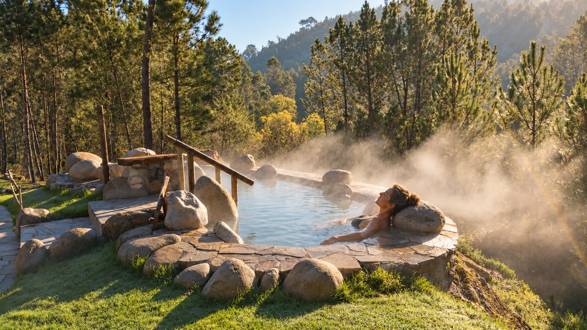

Vuestro punto de partida. Vuestro lugar para volver.
Un baño termal, una cata, un camino que empieza en la puerta o una tarde junto al Miño. Casa Cruceira es una base para descubrir la zona, sin convertir la escapada en una lista de tareas.
Las escenas de actividades son ilustrativas y algunas están generadas o retocadas con IA. No reproducen necesariamente el lugar o servicio descrito. Las actividades externas se reservan por separado y no están incluidas en la estancia.

Escena termal retocada con IA.
Termas de Prexigueiro
Sumergirse en agua caliente, respirar y dejar que el tiempo pase. Un plan para desconectar entre naturaleza y tradición termal, antes de volver a la calma de casa. Consultad horarios, disponibilidad y condiciones de acceso antes de ir.
Imagen ilustrativa generada con IA; no representa una ubicación concreta.
Pozas de Melón
Agua, granito y vegetación acompañan el recorrido del río Cerves. Un plan para pasear y descubrir cascadas y pozas naturales. No son aguas termales: si os apetece bañaros, valorad el caudal, el tiempo y las indicaciones del lugar; las rocas pueden resbalar.
Imagen ilustrativa generada con IA; no representa una ubicación concreta.
Camiño Miñoto Ribeiro
El camino pasa por la puerta de Casa Cruceira. No hace falta completar una etapa ni ponerse una gran meta: basta con salir, recorrer un tramo y disfrutar de lo que aparece a cada paso. A veces, el mejor plan empieza sin coger el coche.
Vista del Miño desde la finca; no es una foto del paseo fluvial.
Paseo junto al río en A Arnoia
Acercaos a la ribera para disfrutar de un paseo tranquilo, con el agua y la vegetación como compañía. Un plan sencillo para estirar las piernas, conversar y dejar que el paisaje marque el ritmo.
Imagen ilustrativa generada con IA; no representa una ubicación concreta.
El Miño desde el agua
Un paseo en ecobarco permite descubrir otra perspectiva de la comarca y disfrutar del paisaje desde el río. Consultad el punto de salida, las fechas y la disponibilidad del servicio para organizar vuestra visita.
Imagen ilustrativa generada con IA; no representa una ubicación concreta.
Bodegas y catas en O Ribeiro
Descubrid el paisaje también a través de sus vinos. En las proximidades encontraréis varias bodegas que ofrecen visitas y catas: una oportunidad para conocer cómo se elaboran y probarlos donde nacen. Elegid la propuesta que más os apetezca y reservad con antelación.
Imagen ilustrativa generada con IA; no representa una ubicación concreta.
Festa do Pemento de A Arnoia
Una ocasión para acercarse al ambiente del pueblo y probar uno de sus sabores más propios. Si vuestra estancia coincide con la fiesta, reservad un hueco para disfrutar de la gastronomía y la celebración. Consultad el programa de cada edición.
Imagen ilustrativa generada con IA; no representa una ubicación concreta.
Festa da Istoria de Ribadavia
Ribadavia transforma sus calles con una celebración que invita a viajar a otra época. Vestimentas, música y ambiente medieval ofrecen una forma distinta de conocer la villa. Revisad las fechas y el programa antes de planificar la escapada.
Un libro en el columpio, fruta recién recogida, una copa al atardecer o una conversación junto al fuego cuando la temporada lo permite. Podéis llenar los días de planes, pero sospechamos que desconectar y descansar aquí será difícil de igualar.